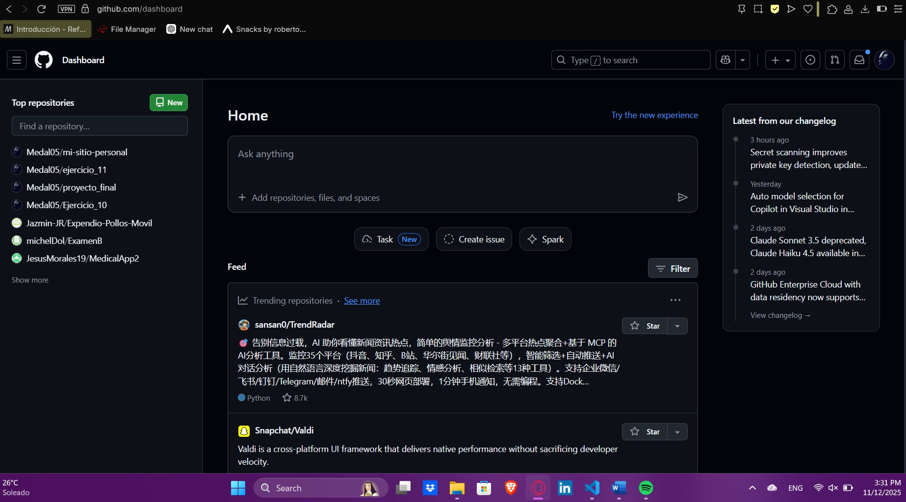
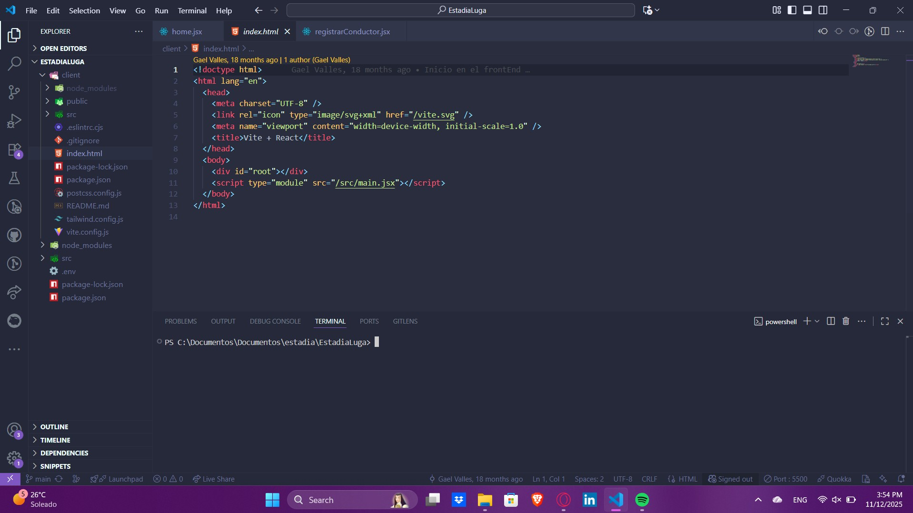
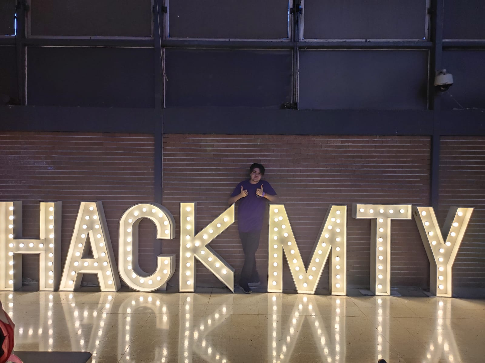

Sobre Mí
Tengo experiencia en el uso de frameworks como React Native, Java y Kotlin. He trabajado como Scrum Master en un proyecto de gestión documental, donde coordiné un equipo utilizando metodologías ágiles como Scrum y Kanban. Me considero una persona comprometida, organizada y con una mentalidad analítica.
  Video de Presentación
En este video hablo brevemente sobre mi experiencia que he tenido en el desarrollo de software.
Mis Pasatiempos
🎮 Videojuegos
Disfruto explorar mundos abiertos y aprender de la narrativa en los juegos.
🎶 Escuchar Música
Me gustan varios géneros musicales, especialmente rock, indie, slow core y EDM.
✈️ Viajar
Me encanta conocer nuevas culturas y lugares con historia.
🏕️ Acampar
Disfruto de la calma de la naturaleza y las actividades al aire libre.